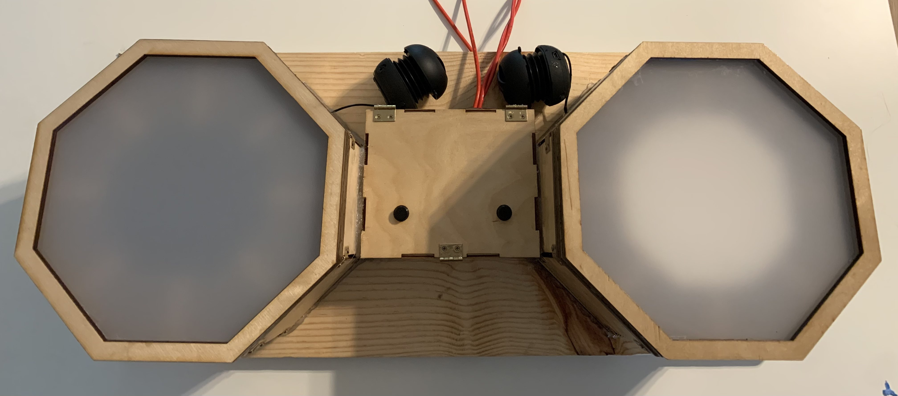

Electronic Drum
Description
Tower of Genn is a student project that I made with other UC Irvine students. It is currently still in development, with plans for a steam release early next year.
The general premise of the game is to place blocks strategically to build your tower as high as possible while maintaining your tower's stability. As the player gets higher, they are presented with hazards and challenges threatening the stability of their tower.
Responsibilites
I was the programming lead on this project, responsible for:
- Organizing and Running Weekly Programmer Meetings
- Assigning Tasks to Programmers
- Managing the Github Repository
- Code Review
Additionally, I implemented a couple game features, including:
- Camera and Camera Controls
- Side Objective System
- Piece Placement Preview
Challenges
This is the first 3D video game that I have programmed. I have worked in 3D engines like Unity before, but only to create sprite based 2D games.
While working on Tower of Genn, I had to adjust to having an extra axis. This caused me some extra challenges when implementing the camera controls. Since the player is free to rotate the camera a full 360 degrees, the forward direction of the camera changes. This means that the controls have to account for the rotation of the camera to move the piece in the proper direction.
Code Samples and Development Pictures
The GitHub for this project is a private repository. However, I have included some of the code I worked on here:
This is the script for the Objective class. This is a base class that in game objectives extend. It has two functions that can be overriden, both being called automatically by ObjectiveManager when they receive signals from other game systems.